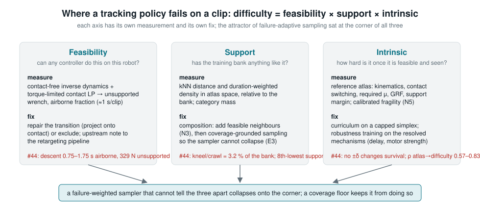
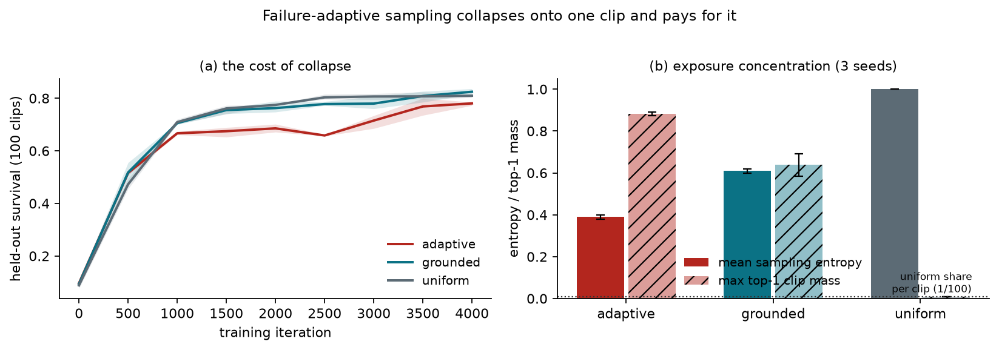
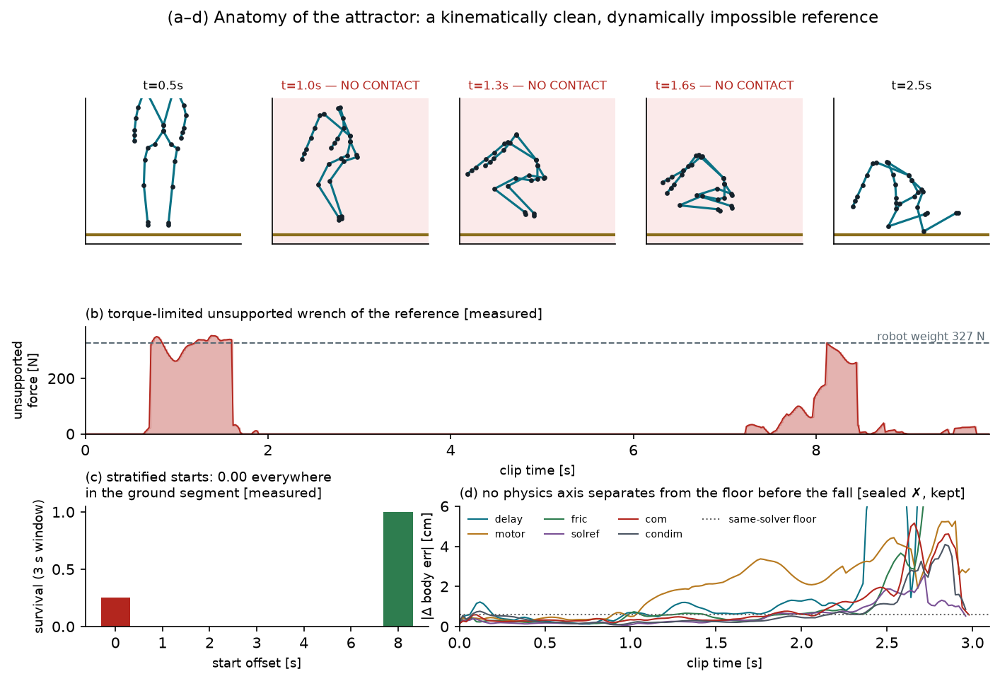
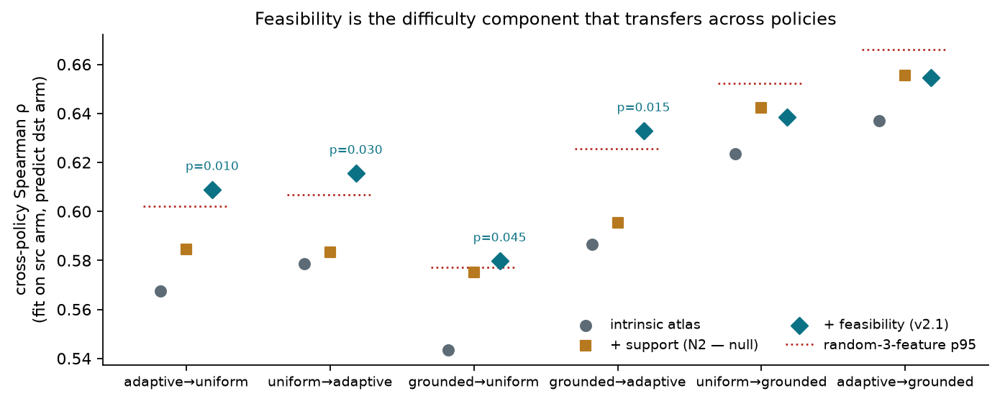

CLIMB flagship — assembled working draft (with slots)
Assembled 2026-08-21 (adds A2/A3 appendices, census-informed §6) from paper/flagship/S*.md (single source of truth: the section files).
Title NOT final — five candidates under review in paper/00_outline.md. Status labels:
sealed ✓ / sealed ✗ (kept) / measured / exploratory / pending 🕐. Every number's artifact path:
paper/RESULTS_LOG.md. Slots (§8 N3/N7/E3; §9 P-SIGN; §7 E3) state what was sealed, what would
confirm or refute it, and when they fill — none do load-bearing work. Figures F1–F7 and their
generating scripts: paper/00_outline.md §Figures. Red-team audit: paper/RED_TEAM.md.
1. Introduction
Generalist humanoid motion tracking has converged on a recipe: retarget a large mocap corpus to the robot, train a tracking policy over the whole bank in massively parallel simulation, and steer training with a curriculum that samples harder motions more often. The recipe scales — trackers now follow tens of thousands of clips — and each of its stages trusts the one before it: the curriculum trusts that failure means hard, the trainer trusts that the references are achievable, and the benchmark trusts that averaged survival measures skill. This paper is an end-to-end audit of that chain on a Unitree G1, and its central finding is that the chain's core quantity — per-clip difficulty — conflates three different things that no stage of the standard pipeline can tell apart:
difficulty = feasibility × support × intrinsic.

A clip can fail because no controller could track it on this robot (feasibility: the retargeted reference demands forces that no available contact can supply); because the training bank contains nothing like it (support); or because it is genuinely demanding (intrinsic: speed, contact switching, friction). Each factor has its own measurement — a per-frame contact-feasibility screen, a bank-relative density, a reference atlas — and its own fix: repair or exclusion, bank composition, and curriculum or robustness training. A failure-weighted sampler that cannot distinguish them collapses onto the corner where all three coincide.
We found that corner empirically. A failure-adaptive sampler of the family used by current open-source trackers concentrated 87–89 % of its exposure on a single kneel-and-crawl clip in three of three seeds — the same clip every time — and lost to uniform sampling on held-out survival (0.780 vs 0.810, 3/3 seeds). Part of the cause is a bug with reach: the sampler's advertised uniform-mixing floor is added to counts, so the true floor is ε/(Σq+ε) < 1 % and shrinks with environment count; we derive this, file it upstream, and repair it with a one-line normalise-then-mix that provably floors exposure (§3–4). But the deeper cause took three instruments to find. A pre-registered physics-fragility gate — 1,440 paired counterfactual worlds across action delay, motor strength, friction, contact stiffness, contact model, and center of mass — failed its own sealed criteria: nothing moved the clip's survival (§5). What finally explained it was a per-frame feasibility test of the reference itself: for a full second of the retargeted descent, no part of the robot is within 6 cm of the floor while the pelvis drops 0.35 m — roughly the robot's entire weight (~329 N) has nothing to push on. The clip is impossible, its feasible kneeling core is absent from the bank (3.2 % of training duration), and the sampler weighted it precisely because failure was guaranteed.
Screening the full 10,705-clip bank (~1 CPU-second per clip) shows this is not an anecdote: 22.8 % of clips are dynamically infeasible for more than 10 % of their frames, ranging from 0.1 % to 100 % across source datasets under a single retargeting pipeline — a pipeline property, not a difficulty gradient — and contaminating 29 of our own 100 evaluation clips (§6). Adding feasibility features to a reference-difficulty model produces the first cross-policy transfer gain that survives a permutation baseline (Spearman 0.567 → 0.609, p = 0.01): feasibility is the component of difficulty that belongs to the clip rather than to any particular training run (§7).
The audit itself required two methodological instruments that we release with the paper. First, a
dual-stack conformance protocol: before any physics claim, the same engine (MuJoCo Warp 3.11.0)
was reached through a second integration stack — Newton (commit 7bb6d02d) via its SolverMuJoCo
path, against mjlab v1.6.0 driving it directly, with classic MuJoCo 3.11.0 (C) as a third referee —
and driven to per-substep agreement (|Δq̇| ≤ 3×10⁻⁵)
— which surfaced four silent integration errors whose combined effect, a 40-point survival fork,
we had initially misread as a finding and here explicitly withdraw (§5.1, Appendix A1). Second, a
calibrated sensitivity statistic: paired-trajectory differences are chaos-dominated at the
millimetre scale within seconds, and only signed replicate-mean effects measured against a
published identical-physics floor resolve mechanism effects (6–14 mm, replicated across seeds at
r = 0.92; §9).
Because this project's history is a catalogue of plausible findings that dissolved under audit — a transfer gap that was an observation bug, a curriculum deficit that was a sampler bug, a "hardest clip" that was a data bug — every interpretive claim in this paper was hash-sealed before its numbers existed, and the full ledger, including the failed gate, the withdrawn verdict, and three nulls, is a first-class exhibit. Two causal confirmations are sealed and scheduled rather than done, and are presented as slots with their pass criteria and pre-listed null responses: composition causality (does adding 16 screened kneel/crawl clips make the feasible phase trackable?) and support moderation at scale (an 800-clip bank with named clips predicted to get worse). We believe the decomposition, the screen, the repair, and the audit discipline are useful to the community now, independent of how those slots resolve — and the paper is written so that either outcome is reportable without revision of any earlier claim.
Contributions. (1) A mechanism-level diagnosis of failure-adaptive curriculum collapse in
humanoid tracking, including the non-floor derivation, with upstream fixes filed — and the
exposure accounting that quantifies the cost: the shipped sampler spends a mean 48.8 % of all
clip draws (peak 87–89 %) on a single impossible clip [measured;
reports/wasted_exposure_accounting.json]. (2) A coverage-grounded repair that provably floors
exposure and rescues failure-weighted sampling. (3) The feasibility × support × intrinsic
decomposition of tracking difficulty, with bank-scale prevalence and the demonstration that
feasibility is the transferable component of difficulty. (4) An audit methodology for
simulation-based robot learning — dual-stack conformance, stratified-start evaluation, calibrated
paired-rollout sensitivity, and a sealed prediction ledger. The data-engineering economics frame
all four: screening the entire 10,705-clip bank costs ~3 CPU-hours and repairing a recoverable
clip ~3 CPU-seconds, against the 10³–10⁴ GPU-hours of the training runs they protect — four to
five orders of magnitude between the audit and the asset it defends.
Released deliverables (three, distinct in where they sit in the pipeline): (i) refeas — the offline pre-training screen (contact-free inverse dynamics + torque-limited contact LP, ~1 CPU-s/clip); (ii) contact-projection repair — the lightweight geometric fix for the recoverable fraction of flagged clips (root projection onto the contact manifold, with an over-repair budget that refuses genuine ballistics); (iii) evaluation & monitoring protocols — stratified-start evaluation, feasibility-stratified endpoints, the dual-stack conformance checklist, and (pending its pre-registered test 🕐) the rollout-only sign-reversal detector as a runtime guard.
2. Related work
Citation status: entries marked ✓ were verified against arXiv/publisher pages on 2026-08-20 (this session); entries marked ○ are standard references cited from memory with high confidence, to be re-verified in the final bibliography pass. None are invented; anything unverifiable is flagged inline.
Adaptive sampling and prioritisation. Prioritised experience replay ○ [Schaul et al., ICLR 2016, arXiv:1511.05952] introduced loss-proportional sampling with explicit α/β corrections for the bias it creates; Prioritised Level Replay ✓ [Jiang, Grefenstette & Rocktäschel, ICML 2021, arXiv:2010.03934] prioritises levels by estimated learning potential and is explicit about staleness and replay-vs-explore mixing. The humanoid-tracking samplers we audit are descendants of these ideas without their safeguards: BeyondMimic ✓ [Liao et al., arXiv:2508.08241] introduced the failure-EMA bin sampler that mjlab ✓ [Zakka et al., arXiv:2601.22074; github.com/mujocolab/mjlab] re-implements at clip level, and both carry the additive ε/N term whose non-floor we derive in §3 (filed as mjlab #1153 and whole_body_tracking #73). Our grounded repair is the PLR-style insight — mix on the distribution simplex, not in the score — applied to this family. Unlike the UED line, our contribution is not a new sampler but the demonstration that in this domain the priority signal itself conflates infeasibility, missing support, and difficulty (§5–7).
Generalist humanoid motion tracking. Physics-based motion imitation scaled from single-clip policies ○ [DeepMimic; Peng et al., TOG 2018, arXiv:1804.02717] to bank-scale controllers: PHC ✓ [Luo et al., ICCV 2023] imitates ~10k AMASS clips with fail-state recovery; MaskedMimic ✓ [Tessler et al., SIGGRAPH Asia 2024, doi:10.1145/3687951] unifies control as motion inpainting. On hardware, the current wave — H2O/OmniH2O ○ [He et al., 2024], ExBody ○ [Cheng et al., 2024], HumanPlus ○ [Fu et al., 2024], BeyondMimic ✓ (above), and SONIC ✓ [NVIDIA GEAR; arXiv:2511.07820, Science Robotics 2026; 700 h of mocap, 42 M parameters] — trains trackers over ever-larger retargeted corpora. All of these inherit the assumption our audit targets: that per-clip failure rates measure difficulty. Our results are complementary to this line, not competitive with it — the screen, the strata, and the sampler repair apply to any of these training stacks. ASAP ✓ [He et al., RSS 2025, arXiv:2502.01143] and SPI-Active ✓ [sampling-based active system identification for legged sim-to-real] address the dynamics gap post-training; PolySim ✓ [arXiv:2510.01708] randomises across heterogeneous simulators during training. We descoped our own solver-ensemble program (§10) after conformance auditing showed harness error dominates engine disagreement at the scales involved.
Retargeting and physical plausibility. Contact-aware retargeting ✓ [Villegas et al., ICCV 2021, arXiv:2109.07431] preserves self-contacts and prevents interpenetration for character animation; PhysCap ✓ [Shimada et al., SIGGRAPH Asia 2020, arXiv:2008.08880] and successors impose physics on captured motion (foot-sliding, floor penetration, unnatural lean). For robots, GMR ✓ [Ze et al., ICRA 2026, github.com/YanjieZe/GMR] and Retargeting Matters ✓ [arXiv:2510.02252] show retargeting choices dominate downstream tracking quality and explicitly target foot sliding, penetration, and self-intersection. Our feasibility screen is the missing dynamic complement to these kinematic criteria: it asks not whether the pose sequence looks clean but whether the wrench it demands can be supplied by any admissible contact forces within actuator limits — the failure class that produced our 22.8 % prevalence and that none of the above checks detect (a clip can have perfect clearance and zero self-intersection while airborne at 1 g). The two systematic artifacts we document (airborne transitions from unreachable postures; hand–hip interpenetration taxing self-collision rewards) are actionable inside any of these retargeting pipelines.
Exposure auditing and evaluation methodology. Our sealed-prediction ledger and the stratified-start protocol follow the pre-registration norm from empirical sciences rather than a specific robotics lineage; within robot learning, the closest practice is the reporting-hygiene line in RL evaluation ○ [e.g., Agarwal et al., NeurIPS 2021 "statistical precipice", arXiv:2108.13264]. The companion exposure-audit methodology (LUCID — internal companion project, unpublished; flagged: not externally verifiable) studies training-exposure accounting for sim-to-real prediction; the LUCID-correlation is this paper's one forward bridge to hardware and carries a small-N caveat wherever cited.
3. Failure-adaptive sampling collapses, and its uniform floor is not a floor
Claim class: sealed-confirmatory (campaign design pre-registered in Plan v2; adjudication plan/BRANCH_DECISION.md; artifacts reports/campaign_summary_3arm.json, reports/A5_coverage_dose.json, reports/A7_attractor.json).
Setup. Unitree G1 motion tracking in mjlab (MuJoCo-Warp), 4096 environments, 4000 PPO iterations, tier_mixed100 (100 clips, 1260 s) from a validated 10,822-clip AMASS/LAFAN1 bank; held-out evaluation on 100 disjoint clips, 8 episodes per clip, 3 seeds per arm. Three samplers: uniform over clips; failure-adaptive (BeyondMimic-style bin sampling, probability ∝ failure EMA + ε/N); grounded (normalise-then-mix: (1−ρ)·softmax-normalised failure weights + ρ·uniform, ρ = 0.10).
Collapse. The adaptive arm concentrates 87–89 % of its sampling mass on a single clip
(top-1 mass max 0.884 / 0.870 / 0.893, mean entropy 0.38–0.40) in all three seeds — and it is the same
clip in all three (BMLmovi_Subject_64_9, "#44"). Uniform holds entropy 1.0 by construction; grounded
holds 0.60–0.62 with top-1 ≤ 0.57–0.70. Held-out survival at 4000 iterations: adaptive 0.780 ± 0.006,
grounded 0.825 ± 0.009, uniform 0.810 ± 0.005; area under the learning curve 0.640 / 0.696 / 0.698.
Uniform beats adaptive in 3/3 seeds — per-seed Δ(uniform − adaptive) at iteration 3999: +0.0300 / +0.0275 / +0.0300 (mean +0.0292; recomputed from reports/campaign/*_it3999.csv); the standardized d_z = 20.2 (reports/campaign_summary_3arm.json) merely reflects the 0.0014 seed s.d. and is footnoted, not headlined — at n = 3 the permutation floor is p = 0.125 and the sign test is 3/3. Grounded matches uniform on the primary
(AULC −0.002) and edges it on the endpoint (+0.015, 3/3 seeds) — Branch B, pre-registered.
The non-floor. The upstream sampler mixes an ε/N term additively into counts, so the effective uniform share is ε/(Σq + ε): with N = 100 clips and realistic failure rates the floor is below 1 %, and it shrinks with num_envs because Σq scales with the number of environments contributing failures. The parameter is documented as a floor; it is not one. Filed as mjlab #1153 and whole_body_tracking #73 with the derivation and a minimal reproduction; the grounded sampler is the one-line repair.
What the attractor is. #44 is a kneel/crawl clip (non-foot ground contact 61 % of frames, 99.7th
percentile of the bank; the training bank has 3.2 % of its duration in that category). Its measured
survival was 0.31 under random start offsets and 0.00 from frame 0 — the first is an artefact of
start-offset averaging (episodes that begin after its ground segment survive), which is why every
difficulty label in this paper uses stratified starts. Under the frame-0 protocol it is unlearnable
for every policy we trained; the sampler that weights by failure therefore never lets go of it.
Section 5 establishes that this is neither physics fragility nor merely coverage: the reference is physically impossible on its descent. Under the D1 evaluation policy (plan/GLOBAL_EVAL_ADDENDUM.md), the survival numbers above are the sealed all-clips secondaries; the feasible-only primaries are in §4.
4. Grounded repair: normalise-then-mix restores coverage without giving up prioritisation
Claim class: sealed-confirmatory (pre-registration A2, sha 37daa8a9…, sealed 2026-08-16
before the grounded arm's final evaluation existed; adjudication plan/BRANCH_DECISION.md).
Strata per plan/GLOBAL_EVAL_ADDENDUM.md (sealed a93a87a0…): feasible-only primary, all-clips
secondary, infeasible-only descriptive.
The repair. The upstream sampler adds its uniform term into counts: p ∝ q + ε/N, so the uniform share is ε/(Σq + ε) — vanishing exactly when failures are plentiful (§3). Grounded sampling normalises first and mixes on the simplex: p = (1 − ρ)·softmax(failure weights) + ρ·u, ρ = 0.10 — a true, scale-invariant floor. One line of code; the same failure signal.
Effect on exposure (the mechanism variable). Over 3 seeds × 4,000 iterations
(reports/A5_coverage_dose.json): mean sampling entropy 0.60–0.62 vs adaptive's 0.38–0.40; top-1
clip mass max 0.57–0.70 vs 0.87–0.89. The attractor is the same clip in all six adaptive/grounded
runs (reports/A7_attractor.json) — grounding does not change what the sampler wants, it bounds
what it can spend.

Effect on performance. Held-out survival at iteration 3999 (3 seeds, seed-mean ± sd where
sealed; reports/campaign_summary_3arm.json, reports/N_atlas_v21.json):
| arm | feasible-only (primary, 71 clips) | all 100 (secondary, sealed record) | infeasible-only (descriptive, 29) |
|---|---|---|---|
| adaptive | 0.811 | 0.780 ± 0.006 | 0.705 |
| uniform | 0.834 | 0.810 ± 0.005 | 0.750 |
| grounded | 0.859 | 0.825 ± 0.009 | 0.741 |
Sealed adjudication (all-clips, as registered): grounded ≫ adaptive (AULC +0.055, endpoint +0.044,
3/3 seeds) — coverage-grounding rescues failure-weighted adaptivity from collapse. Against
uniform, the sealed primary (AULC) is a match (0.6956 vs 0.6979, −0.3 % relative); the endpoint
favours grounded (+0.015, 3/3 seeds) but is secondary, and the sealed verdict is Branch B:
grounded ≈ uniform at 100 clips. The registered co-primary (iterations-to-0.810) is reported as
uninformative by construction: the target was uniform's own rounded-up endpoint mean, which
censors uniform at its own bar — a registration defect we document rather than exploit
(plan/BRANCH_DECISION.md).
The stratified re-analysis sharpens the mechanism (exploratory; strata computed 2026-08-18,
plan/ATLAS_v21_RESULT.md §2b): grounded's endpoint edge over uniform is +0.025 on feasible
clips and −0.009 on infeasible ones. A curriculum can only help where success is possible; no
sampler can teach a policy to track a reference that asks the robot to hover (§5–6). This is also
the honest frame for the sealed Branch B: at 100 clips, 29 % of the evaluation mass sat in a
stratum where the compared samplers cannot differ except by noise.
What remains open, and is sealed. Whether prioritisation beats uniform when the bank is
diverse enough for coverage to bind is E3's question (800 clips), sealed with bidirectional
support-moderation predictions including named clips that should get worse
(plan/PREREGISTRATION_E3_addendum_v2.md, 2c38845b…). Whether composition — not sampling —
is the causal fix for the attractor's family is N3's question, sealed with its null follow-ups
(plan/PREREGISTRATION_N3_coverage.md, af1b7c9f…). Both slots are in §8.
5. Anatomy of an attractor: from "hardest clip" to "impossible reference"
The clip every adaptive run collapsed onto (§3) looked, at first, like the most interesting object in the bank: a kneel-down-to-crawl motion at the 99.7th percentile of non-foot ground contact, failing at 0.31 survival while the bank averaged 0.89. Three successive instruments each destroyed one hypothesis about it. We present them in order because the order is the method: physics claims were not permitted until the harness was proven, and data claims were not permitted until physics was excluded.
5.1 First, prove the instrument: same-solver conformance (G0)
To ask physics questions we coupled a second implementation — Newton's SolverMuJoCo — to the
training environment so that the environment kept observations, the frozen policy, actions and
terminations while the second stack integrated the dynamics. Both sides run the same
MuJoCo-Warp 3.11.0 (mjlab v1.6.0 directly; Newton commit 7bb6d02d, warp-lang 1.16.0, via
SolverMuJoCo — pins in plan/PREREGISTRATION_G1_clip44.md), so the sealed prediction was
agreement to seed noise. Instead: survival
0.44–0.72 vs 1.00 on a mastered clip, with identical mean tracking error, across six runs.
Under the standing rule that any same-solver discrepancy is integration error until proven
otherwise, a four-stage elimination (full model diff; static/spinning bias forces from identical
states; per-substep paired stepping through the forking window with MuJoCo-C as a third referee; a
shadow solver stepping the other engine's own trajectory) located four silent integration errors
— none of them physics, all of them instructive, and one of them (the initially reported
"contact-event fork at step 298") a previously published-internally finding that we hereby state
as withdrawn: it was the 6.0-second clip's wrap-around teleport, visible only to the engine
that was allowed to overwrite it. The four errors and the protocol are Appendix A1; after the
fixes the two implementations agree at 1.000/1.000 vs 1.000/1.000 survival, Δerror ≤ 1 mm,
per-substep |Δq̇| ≤ 3 × 10⁻⁵ rad/s (plan/S1_RESULT.md, reports/S1_*_absorb.json). Everything
downstream inherits this floor.
5.2 Then ask physics: the pre-registered fragility gate (G1) — negative
Sealed before the run (plan/PREREGISTRATION_G1_clip44.md, 41e4b20c… + addendum 2a9ceaca…):
if the attractor's difficulty is a physics-parameter sensitivity, paired ±δ counterfactual worlds
— action delay +20 ms, motor strength ±15 %, foot friction 0.4/0.8, contact stiffness 12/28 ms,
torso CoM ±2 cm, and non-foot contacts made frictional — should show elevated fragility on the
contact axes relative to matched-easy controls, localised before failure. 480 + 480 + 480 worlds
(intervention arm, contact-model arm, same-solver floor arm), 6 clips, 8 replicate ICs.
The gate fails on its sealed criteria (plan/G1_RESULT.md, reports/G1/run0/): the predicted
axes reach 1.30–1.33× the matched-easy fragility (needed ≥ 2×); no (clip, axis) reaches the sealed
5× same-solver floor; and termination fragility is zero everywhere — the clip dies 8/8 in all
ten configurations, at every start offset inside its ground segment, with 0.0–0.2 % actuator
saturation until the fall. Physics-parameter sensitivity cannot explain a failure that no physics
parameter modulates. (The gate also surfaced one exploratory anomaly — a sign reversal on the
motor axis unique to this clip — which §9 develops with the calibrated instrument.)
5.3 Then ask the data: contact-feasibility of the reference (N1) — verdict
Per-frame inverse dynamics with contacts disabled gives the base wrench the environment must
supply; a torque-limited LP over friction cones at the contacts actually available (within 6 cm of
the plane) gives the smallest unsupported remainder (tools/n1_knee_id.py,
reports/N1_clip44_knee_id.json). The verdict is unambiguous: in the descent, 0.75–1.75 s, no
collision geom is within 6 cm of the floor — the retargeted feet float 7–10 cm up while the
pelvis falls 0.79 → 0.40 m — leaving ~329 N ≈ the robot's full weight (327 N) unsupported in 86 %
of those frames; the rise repeats it at 8.0–8.5 s. The kneel/crawl between is fully supportable
within actuator limits, even under the simulator's own frictionless-knee contact model. The
matched-easy control is supported at every frame. Kinematically the clip is ordinary — zero
joint-limit violations, ≤ 5.6 rad/s — which is exactly why kinematic QC and the kinematic half of
our atlas could not see it. Mechanism: the human sits back onto the heels; the robot's leg cannot
fold that far; the retarget resolves the conflict by lifting the legs instead of lowering the root.

Resolution. The attractor decomposes into (i) a physically impossible transition — a data
defect, family-wide: 20 of its 40 nearest kneel/crawl neighbours exceed the 10 %-infeasible-frame
threshold (reports/N3_candidate_feasibility.json; the "12/40" first reported in
plan/N1_RESULT.md was an informal stricter cut, corrected in plan/GLOBAL_EVAL_ADDENDUM.md) —
and (ii) a feasible skill (kneeling, crawling) occupying 3.2 % of the training bank's duration, on
which the policy was never trained. The failure-weighted sampler cannot distinguish "impossible"
from "hard" from "unseen"; it poured 87–89 % of its exposure into the one clip where those three
coincide. The earlier "0.31 survival" was itself an artifact of start-offset averaging — episodes
beginning after the ground segment survived — which is why every difficulty label from here on
uses the stratified-start protocol (§6). Whether adding feasible members of this family to the
bank makes the feasible phase trackable is the sealed N3 keystone (§8); whether repairing the
impossible transition makes the descent trackable is N7, to be sealed after N3 reads out.
6. The feasibility screen at scale (compressed; method and full tables in the companion note)
Method. For each frame of a retargeted reference: (i) q, q̇ from the clip and q̈ by central
differences; (ii) contact-free inverse dynamics (MuJoCo mj_inverse, contacts disabled) → the
6-D base wrench W the environment must supply and the joint torques with no contact; (iii) candidate
contacts = collision geoms within 6 cm of the plane (mj_geomDistance, nearest point);
(iv) contact forces in pyramidal friction cones (μ 0.6, or frictionless non-foot geoms for the sim
model) that best explain W — an NNLS for the unconstrained residual and a torque-limited LP for the
smallest unsupported wrench achievable within actuator force ranges. Per-clip features: airborne
fraction (no candidate contact), infeasible fraction (torque-limited unsupported wrench > ½ weight),
unsupported impulse per weight, torque-infeasible fraction. ~1 s per clip on one CPU core.
#44. Standing (0–0.75 s): supported. Descent 0.75–1.75 s: no collision geom within 6 cm of the floor — the feet float 7–10 cm above it while the pelvis falls 0.79 → 0.40 m — leaving 329 N ≈ body weight (327 N) unsupported in 86 % of frames; the retargeted human sat back onto the heels, the G1's leg cannot fold that far, and the retarget lifted the whole leg. Kneel/crawl 1.75–7.25 s: fully supportable by shins, thighs, hands and feet within actuator limits, even with frictionless knees. Rise 8.0–8.5 s: airborne again (250–330 N). The policy's tracking error starts growing exactly at 0.75 s and every world dies at 2.2–3.0 s. Kinematically the clip is ordinary (no joint-limit violations, ≤ 5.6 rad/s), which is why the atlas's kinematic features could not see it.
Prevalence (10,705 clips, ~1 CPU-s each; reports/feasibility_all/prevalence_report.txt,
sentinel reports/feasibility_all/COMPLETED): 22.8 % of the bank exceeds 10 % dynamically
infeasible frames — ground-contact category 39 %, dynamic 59 %, locomotion 25 %, quiet 13 % —
and by source dataset the rate spans 0.1 % (GRAB) to 100 % (CNRS), Transitions 90 %, CMU 40 %.
A three-orders-of-magnitude spread across sources under one pipeline and one robot is a
pipeline × source property, not a difficulty gradient. Of the attractor's 40 nearest kneel/crawl
neighbours, 20 exceed the threshold; the KIT kneel_down_to_crawl clips sit at 3–8 %.
![Figure F4 [measured]](assets/f4_prevalence.png)
Evaluation-set contamination. 29 of our own 100 held-out clips are flagged. They score 6.0–8.4 points below each policy's
all-clips aggregate (8.4–11.8 below its feasible stratum; reports/N_atlas_v21.json) and cannot
separate samplers (§4). Policy, sealed before any new
number existed (plan/GLOBAL_EVAL_ADDENDUM.md, a93a87a0…): primary endpoints on the
feasible-only stratum, all-clips secondary, infeasible-only descriptive; the threshold's
provenance (it predates the policy) is recorded in the seal. We do not swap the evaluation set
mid-project.
A second hygiene finding, and a null. Reference poses also carry hand–hip interpenetration
(> 1 cm on a median 13 % of frames; 53 % of clips exceed 10 %), so the self-collision penalty is
charged against accurate tracking. Sealed test P-TAX (plan/PREREGISTRATION_P_TAX.md,
7960057a…) asked whether this tax predicts difficulty beyond the feasibility flag: it does
not (heldout partial ρ −0.04 to −0.15, no positive CI excluding zero on any arm — sealed rule
0/3; plan/P_TAX_RESULT.md, reports/P_TAX_result.json). It remains a recommendation — audit
reward terms against the reference, not only the policy — and nothing more.
Consequence for the argument (details §5, slots §8). #44 decomposes into a physically impossible transition and a feasible skill the bank does not contain. The two are separable by start offset, and the pre-registered composition experiment (N3) conditions on it: augmentation is predicted to make the kneel/crawl phase trackable and to leave the descent unlearnable; a later repair experiment (N7) projects the transition back onto contact and predicts the descent becomes learnable and the motor-strength sign reversal disappears.
Deployment implication (measured in sim; hardware phenomenology predicted, labeled). Tracking
the airborne descent saturates zero actuators until contact, then pins 5/29 at ≥ 98 % force range
within 0.6 s, in 8/8 replicates (reports/effort_sat_at_fall.json) — an unplanned ~0.3 m fall
onto wrists and knees at every attempt. With G1 having shown no physics parameter changes the
outcome [sealed ✗, kept] and the sign-reversal indicating gain increases make such segments
worse [exploratory; P-SIGN pending 🕐], the screen functions as a pre-deployment safety filter:
1 CPU-second per clip against impact retries, current-limit bursts, and wasted DR budget on
unfixable segments.
7. Difficulty that transfers (complete except the E3 slot)
The question. A difficulty atlas is useful only if it describes the motion, not one training
run. Two policies rank held-out difficulty at ρ = 0.832 (reports/A3_atlas_transfer.json); a
reference-kinematics/dynamics atlas fit on one policy predicted the other at ρ = 0.567–0.579 —
below the pre-registered 0.6 bar (sealed criterion; outcome recorded as a miss). What closes the
gap?
Support alone does not (sealed prediction, null). Bank-relative support features (kNN distance
and duration-weighted density in atlas space, category mass) were pre-registered
(plan/N2_RESULT.md) with two claims: atlas residuals concentrate on low-support clips — holds,
ρ(|resid|, kNN) = +0.60 / +0.54 (exploratory-confirmed on both start protocols) — and transfer
lifts above 0.567 — null: +0.00 to +0.03, inside a 200-draw random-feature baseline
(reports/N2_atlas_support.json). Diagnosis, stated in advance of E3: with a single training
bank, support is collinear with the intrinsic coordinates; it becomes a distinct object only when
the bank changes. That is E3's sealed test (slot, §8).
Feasibility does (sealed prediction, met). Atlas v2.1 added three screen features
(infeasible_frac, airborne_frac, unsupported impulse per weight), pre-registered
(plan/PREREGISTRATION_ATLAS_v21.md, 9b1a2c78…) with predicted transfer lift ≥ +0.03 at
permutation p < 0.05. Result (reports/N_atlas_v21.json, plan/ATLAS_v21_RESULT.md):
| transfer (A3 protocol) | intrinsic | + feasibility | random-3 p95 | perm p |
|---|---|---|---|---|
| adaptive → uniform | 0.567 | 0.609 | 0.602 | 0.010 |
| uniform → adaptive | 0.579 | 0.616 | 0.607 | 0.030 |
| grounded → uniform | 0.544 | 0.580 | 0.577 | 0.045 |
| grounded → adaptive | 0.586 | 0.633 | 0.626 | 0.015 |
| → grounded (2 pairs) | 0.623 / 0.637 | 0.638 / 0.655 | n.s. | 0.24 / 0.16 |
All six pairs move in the predicted direction; four clear the permutation baseline —
feasibility is the first feature family that transfers across policies, because it is a
property of the reference on the robot, not of any training run. Direct correlations:
ρ(held-out difficulty, infeasible_frac) = +0.37 / +0.48 / +0.50 per arm. The two companion
predictions were not met and are reported as sealed misses: within-bank LOO fit did not
improve (F1 — at 100 clips the screen features are collinear with the atlas's contact proxies,
which were their shadows all along), and the residual's correlation with infeasibility did not
vanish under a linear model (F3, half-met: support keeps explaining the misses).

Where this leaves the decomposition. Intrinsic features predict within-policy difficulty
(LOO ρ 0.47–0.51 training tier, 0.70+ on the original RQ1 protocol); feasibility adds the
cross-policy component; support is measured, predictive in the raw (ρ up to +0.41), and awaiting
its uncontaminated test. [E3 SLOT — sealed predictions 2c38845b…: per-clip Δdifficulty
(800−100) vs Δlog-support ρ ≤ −0.25; all 22 named dynamic held-out clips lose support and are
predicted to get harder; H2b-S support-moderation of the grounded−uniform gap; fills after the
Sept-15+ E3 run.]
8. Causal tests (slots — structure fixed now, numbers fill on the Sept-15+ schedule)
Everything before this section is observational or mechanistic. Three sealed interventions close the loop. Each slot states: what was sealed, what would confirm or refute it, when it fills.
8.1 N3 — composition causality (keystone) [SLOT]
Sealed 2026-08-19-era (plan/PREREGISTRATION_N3_coverage.md, af1b7c9f…; precondition
plan/N3_PRECONDITION_env_admits.md, 3c331e18… — terminations verified not to fire on the
reference; naive PD-follow shown uninformative; contact-supported dynamics verified). Design:
tier_mixed100 + ground16 (16 nearest feasibility-screened kneel/crawl neighbours) vs
+ random16; uniform ×2 seeds (keystone), adaptive ×1, random-control ×1; stratified-start
evaluation.
Confirms coverage-causality iff E1: attractor kneel/crawl-phase survival (offsets {2,3,4,6} s)
rises from 0.000 (baseline, reports/N3_baseline_uniform-s1_strat.csv) to ≥ 0.25 in both keystone
seeds, and E4: the random16 control stays < 0.10. E2 (no regression on easy/held-out), E3
(the adaptive sampler's top-1 mass releases below 0.5 as the family becomes learnable), E5
(training-set family improvement) are secondary. The descent offsets {0,1} s are predicted to
remain ≤ 0.25 — augmentation cannot fix an airborne reference; that is N7's job.
Pre-listed null follow-ups (verbatim from the seal's precondition): (1) exposure mass
insufficient — grounded targeting of the family, one seed; (2) within-family start-phase
curriculum — start training episodes inside the feasible phase, one seed; (3) reward tax on the
reference — checked via the oracle's per-term reward rates (r_self_collisions, r_joint_limit)
before touching any weight. None of these expands the bank.
Fills: first GPU block after Sept 15; resume-safety check (frozen config re-loaded, hash-checked, seeds confirmed) before relaunch; realized GPU-hours recorded and used to re-plan the remaining budget.
8.2 N7 — repair the impossible [SLOT, seal pending N3 readout]
Draft on file (plan/N7_DRAFT_repair.md): contact-restoring projection of the attractor family's
airborne transitions (lower the root, re-solve leg IK, time-warp within original vertical-velocity
bounds; verify with the screen to ≤ 5 % infeasible frames and no new interpenetration). Sealed
predictions will include: the repaired descent becomes learnable in the augmented bank; the §9
motor-strength sign reversal vanishes on the repaired clip; unrepaired family descents do not
improve in the same run. Converts "exclude the impossible" into "repair the impossible" and closes
the feasibility axis causally rather than by omission.
8.3 E3 — support moderation at scale [SLOT]
Sealed (plan/PREREGISTRATION_E3_addendum.md f7929136… + v2 2c38845b… + the D1 policy
a93a87a0…): uniform-800 ×3 vs grounded-800 ×3 (+ ≤1 adaptive demo, optional LP arm);
bank-invariant support (clean-bank z-space, fixed kernel h = 2.00); bidirectional named
predictions — the 22 dynamic held-out clips all lose support 100→800 and are predicted to get
harder (P-A, the risky half); the 20 largest support gainers get easier (P-B); grounded's
advantage concentrates on the losers (P-D, H2b-S: ρ(Δᴳ⁻ᵁ, Δlog-support) ≤ −0.25). Feasible-only
primary endpoints per D1; bank composition (ground 3.2 % → 0.65 %, dynamic 11.8 % → 1.9 %) is an
analysed variable; feasibility flags are a launch gate (already computed for all 900 clips,
reports/feasibility_e3/feasibility.csv, sentinel present).
Fills: after N3 in the Sept-15+ GPU order; results freeze Dec 1.
9. A calibrated instrument for physics sensitivity (complete except the P-SIGN slot)
Why an instrument section exists. The G1 gate (§5.2) produced a methodological finding that outranks its negative: the natural fragility statistic — mean |φ⁺ − φ⁻| along paired single trajectories — is chaos-dominated. Two runs of identical physics from identical states (the conformance pair of §5.1) already diverge by 2.5–8.4 mm of body-position error within seconds; closed-loop humanoid tracking has a Lyapunov horizon of ~1–2 s at the millimetre scale. Every intervention effect in the pre-registered analysis (0.003–0.019 m) sat at that floor, which is why nothing could be reported under the sealed 5× rule. An instrument that folds the sign measures divergence, not mechanism.
The calibration (tools/analyze_g1_v2.py; reports/G1/run0/g1_v2_*; labelled instrument
calibration, not a re-adjudication of G1). Three replacements, each with the floor measured
identically from the stock-engine arm: S, the signed replicate-mean effect
E_r[mean_t(φ⁺ − φ⁻)] with paired-bootstrap CIs (chaos averages out; shrinks with R); D, the
Wasserstein-1 distance between pooled φ distributions minus the identical-physics W1; T,
paired timing statistics (first-termination shift, contact-onset shift). Resolution criterion:
|S| > 2× the floor CI half-width with the CI excluding zero.
What it resolves (R = 8): the floor drops to ≈ 0 ± 1 mm on long clips, and mechanism effects of 6–14 mm stand clear of it — motor strength on 5/6 clips, delay on the dynamic clips (+11.9 mm on the 99th-percentile-speed clip), while stiffness/CoM/condim sit at 2–3 mm and contact onsets never move (≤ 0.03 s under every intervention). Timing adds a phase channel: +20 ms of action delay brings the attractor's fall forward by 0.51 ± 0.14 s.
It replicates. An independent replicate set (IC seed 1, reports/G1/run1_seed1/): Pearson
r = 0.92 across the 36 (axis, clip) signed effects, and 6/6 sign agreement on every effect
above 5 mm; 2–4 mm effects flip sign exactly as their CIs permit (plan/N5_RESULT.md). The
instrument is reproducible where it claims resolution and says so where it does not.
The one anomaly it certifies (exploratory, two supporting cases): on the impossible clip — and only there — +15 % motor strength makes tracking worse (+11.5 / +12.8 mm across seeds, CIs excluding zero) while helping every other clip (−2.6 to −14.2 mm). Windowed against the N1 contact flags, the reversal is absent while the reference is supportable (+0.3 / −1.4 mm), switches on in the airborne window (+15.0 / +16.0 mm), and persists into its aftermath. Reading: a stronger robot executes an untrackable reference harder. If general, this is a rollout-only infeasibility detector — no inverse dynamics, no model of the reference, just paired rollouts.
[P-SIGN SLOT — sealed c7916e8c… (plan/PREREGISTRATION_P_SIGN.md): ≥ +5 mm airborne-window
effect with CI excluding zero on ≥ 8 of the 12 named family clips; < 2 mm on ≥ 8 of 12 feasible
matched controls; ≥ 3× airborne/standing localisation. Pass → this paragraph becomes a
"rollout-only infeasibility detector" subsection and a candidate runtime guard (deployment: when
tightening gains worsens a segment, suspect the reference, not the controller). Fail → the
anomaly stays exactly this one paragraph. Runs in genuine GPU gap capacity; fills when run.]
10. Limitations and scope
One robot, one embodiment. Every number is Unitree G1. The screen's verdicts are embodiment-relative by construction (a clip infeasible for the G1's leg fold may be feasible for a robot with different limits); prevalence rates will differ per robot, though the 0.1–100 % per-source spread suggests the pipeline-property conclusion is robust.
One task configuration. One reward set (BeyondMimic-style tracking terms), one termination set, one PPO configuration, one action space (position targets at 50 Hz). The P-TAX null (§6) shows the reward's reference-interpenetration tax does not confound difficulty here; other reward configurations were not tested.
Survival-centric endpoints. Difficulty = 1 − survival throughout. Tracking-error endpoints correlate but were not sealed as primaries. The stratified-start protocol removes the worst survival artifact (start-offset averaging) but survival remains a coarse instrument.
Horizon. Exp-1/2 trained 4,000 iterations at 4,096 environments; the adaptive-vs-uniform gap could in principle close at much longer horizons (an E4 cell is sealed but unscheduled). Branch B ("grounded ≈ uniform" at 100 clips) is a bounded claim at this scale, not an asymptotic one.
Simulation only. No hardware in this paper. The sign-reversal signature (§9) is proposed as a deployment-time diagnostic but is untested off-simulator; the sealed P-SIGN test is itself simulation. The LUCID-correlation — whether our simulated exposure audit predicts a companion project's sim-to-real degradation — is the one bridge on the roadmap, and its N is small (few policies, few motions); we state that caveat wherever it is cited.
Causal slots pending. N3 (composition) and E3 (support at scale) are sealed with pass criteria and pre-listed null responses but not run at submission of this draft; §8 presents them as slots. The decomposition's feasibility axis is causally closed only down to measurement (N1) and prediction transfer (§7); the repair experiment (N7) that would close it interventionally is sealed-after-N3 by design.
Descoped: the solver-ensemble program. This project began with the hypothesis that disagreement across physics engines could serve as an uncertainty oracle for sim-to-real. We descoped it for three reasons, in order of discovery: (i) same-solver conformance consumed the error budget — four silent integration errors produced larger effects than any cross-solver difference we intended to measure, and until a harness passes per-substep conformance, cross-solver disagreement measures the harness; (ii) the fragility gate showed single-trajectory divergence is chaos-dominated at exactly the scales an ensemble would integrate over; (iii) the attractor that motivated the program dissolved into a data defect. The second engine earned a different role — referee (conformance), measurement backend (the batched inverse-dynamics/LP screen), and instrument floor (N5) — and we report that plainly rather than as the program originally imagined.
Bank provenance. One retargeting pipeline's output (whole_body_tracking → G1) was screened at scale; the two-retargeter comparison on shared source clips is parked. Claims about source mocap quality are explicitly out of scope: the screen certifies the retargeted output on the target robot.
Exhibit: the sealed record (every pre-registration, hash, prediction, outcome)
All hashes sha256 (truncated); seal files in plan/, hash manifests in plan/*.sha256.
Outcomes: ✅ confirmed · ❌ refuted/null (as sealed) · ⚠ uninformative by registration defect ·
🕐 slot (sealed, not yet run) · ⬅ withdrawn.
| seal | hash | sealed | primary prediction | outcome | artifacts |
|---|---|---|---|---|---|
| A2 (Exp-2 grounded arm) | 37daa8a9 |
2026-08-16 | grounded beats/matches uniform on AULC; beats adaptive | ✅ grounded ≫ adaptive (AULC +0.055, 3/3 seeds); grounded ≈ uniform (Branch B, AULC −0.002) | plan/BRANCH_DECISION.md, reports/campaign_summary_3arm.json |
| A2 co-primary (iters-to-target) | 〃 | 〃 | grounded reaches uniform's endpoint sooner | ⚠ target was uniform's own rounded-up mean → uniform censored at its own bar; reported as uninformative, no compute-reduction claim | plan/BRANCH_DECISION.md |
| E10 (α/cap 2×2) | dc207877 |
2026-08-17 | (frozen before running) | 🕐 frozen per v4/v5 | plan/PREREGISTRATION_E10.md |
| S1 conformance verdict | — (result, not seal) | 2026-08-17 | Newton ≡ mjlab to seed noise | ⬅ initial "PASS with a contact-event fork that is itself a fragility measurement" withdrawn: the fork was four integration errors (#8–11); after fixes 1.000/1.000 vs 1.000/1.000 | plan/S1_RESULT.md (revised in place with the withdrawal recorded), reports/S1_*_absorb.json |
| G1 clip-#44 gate | 41e4b20c + addendum 2a9ceaca |
2026-08-17 | contact-model & CoM fragility ≥ 2× matched-easy, ≥ 5× same-solver floor, pre-failure localisation | ❌ gate fails as sealed: 1.30–1.33× on predicted axes; nothing reaches 5× floor; termination fragility zero everywhere | plan/G1_RESULT.md, reports/G1/run0/ |
| N2 support features | (in plan/N2_RESULT.md, pre-stated) |
2026-08-18 | residuals concentrate on low support ✚ transfer lifts above 0.567 | ✅ residuals (ρ +0.60/+0.54) / ❌ transfer (+0.00–0.03, inside noise baseline) — the honest split | reports/N2_atlas_support.json |
| N3 coverage causality | af1b7c9f (+ precondition 3c331e18) |
2026-08-18 | attractor kneel/crawl-phase survival 0.000 → ≥ 0.25 in 2/2 keystone seeds; random16 control < 0.10 | 🕐 chain paused (CPU-only rule); first GPU block after Sept 15 | reports/N3_baseline_uniform-s1_strat.csv |
| E3 addendum (support moderation) | f7929136 |
2026-08-18 | H2b → support-moderation; stratified starts; composition analysed | 🕐 post-Sept-15 | — |
| E3 addendum v2 (bidirectional, named) | 2c38845b |
2026-08-18 | 22 named dynamic clips get harder at 800; 20 named gainers easier; ρ(Δᴳ⁻ᵁ, Δsupport) ≤ −0.25 | 🕐 post-Sept-15 | reports/support_change_heldout100_100to800.csv |
| Atlas v2.1 feasibility features | 9b1a2c78 |
2026-08-18 | F1 within-bank lift ≥ +0.05 / F2 transfer lift ≥ +0.03 at p < 0.05 / F3 residual anatomy | ❌ F1 / ✅ F2 (0.567 → 0.609, p = 0.010; all six pairs positive) / half F3 | reports/N_atlas_v21.json, plan/ATLAS_v21_RESULT.md |
| D1 evaluation policy | a93a87a0 |
2026-08-19 | (policy, not prediction) feasible-only primary; threshold provenance cited | — sealed before N3 relaunch / any E3 number | plan/GLOBAL_EVAL_ADDENDUM.md |
| P-SIGN sign-reversal generality | c7916e8c |
2026-08-19 | ≥ 8/12 family clips ≥ +5 mm airborne (CI>0); ≥ 8/12 controls < 2 mm; ≥ 3× localisation | 🕐 GPU gap capacity | plan/PREREGISTRATION_P_SIGN.md |
| P-TAX reward-tax relevance | 7960057a |
2026-08-19 | tax → difficulty partial CI > 0 on ≥ 2 heldout arms | ❌ null as sealed (0/3; significant CIs are negative) — hygiene finding only | plan/P_TAX_RESULT.md, reports/P_TAX_result.json |
| Research plan v5 | 4d490cf8 |
2026-08-19 | (directive encoding) | — | plan/RESEARCH_PLAN_v5.md |
Also on the record without seals (results that changed course): the atlas transfer criterion miss
(ρ 0.567 < 0.6 sealed bar, reports/A3_atlas_transfer.json); the H4→H4-r sign correction and the
A2 target defect (plan/ADDENDUM_2026-08-16.md); the "0.31 survival" start-offset artifact and
the 12→20 family-count correction (plan/GLOBAL_EVAL_ADDENDUM.md).
Appendix A1. Same-solver conformance: the elimination protocol and four silent integration errors
We coupled Newton's SolverMuJoCo (MuJoCo-Warp 3.11.0) to mjlab's environment so that mjlab keeps
observations, the frozen policy, actions and terminations while Newton integrates the physics —
MuJoCo state ↔ MuJoCo state through solver.mjw_data, one Newton substep per mjlab sim.step().
Both sides run the same MuJoCo-Warp version, so the pre-registered prediction was agreement to seed
noise. Instead the mastered clip KIT_1226 read survival 0.44–0.72 on Newton against 1.00 on mjlab in
six runs, with the same mean tracking error (Δ ≤ 1 mm) and a fork at control step ~298.
Protocol. (i) A complete model diff of the two compiled MJWarp models — every opt.* field, the
contact pair-filter matrix (469 robot–robot + 33 ground pairs), joints, actuators, geometry.
(ii) Static and spinning bias-force comparison from identical (q, q̇). (iii) Per-substep paired
stepping: from identical (q, q̇, ctrl, warm-start) at every substep of the forking window, one step
in each engine, comparing q̈, constraint forces, contact counts. (iv) Contact-set diffs with
MuJoCo-C as a third referee stepping the same pre-state. (v) A shadow solver: mjlab's engine
stepping Newton's own trajectory substep by substep during a Newton-driven rollout.
Findings. Four integration errors, all silent, none physics:
1. mjlab's startup domain randomisation (torso CoM ±2.5/5/5 cm, foot μ 0.3–1.2) is written into
env.sim.wp_model after compile and never reaches the spec; Newton was integrating the nominal
robot — a 3.3 N·m base gravity-torque residual, visible only as a ~1 cm whole-body CoM shift.
Fix: mirror the DR-expanded fields by name and recompute derived constants (residual → 3e-6).
2. Newton's MJCF import rounds geometry through float32 transforms (geom quaternions 4e-7 off,
body positions 3e-7). MuJoCo includes a contact iff dist < 0, and a lightly loaded foot capsule
rests at dist ≈ 0: the offset decides whether a frictional contact exists. At every disagreeing
substep Newton carried exactly one extra ground–foot contact at dist −0.0; MuJoCo-C agreed with
mjlab to 1e-3 and with Newton not at all (0.05–3.3 rad/s). Fix: copy the reference's exact float32
geometry into Newton's model (0 mismatches over 300 steps × 8 worlds).
3. The motion command teleports the robot after reset() computed its observation; the first
action was a random kick.
4. The coupling was one-directional. KIT_1226 is a 6.0 s clip; step 299 is its wrap, where the
motion command teleports the robot onto a fresh reference by writing qpos/qvel into mjlab's sim.
mjlab's arm got teleported; Newton's arm had the write overwritten by its own physics one substep
later and chased a reference that had jumped. Auto-resets and push events write state the same
way. Fix: absorb any environment-side state write into the solver at the start of each substep.
After the fixes: KIT_1226 1.000/1.000 vs 1.000/1.000 (Δerr −0.5 mm), clip #44 0.000 vs 0.000 (Δerr +1 mm), per-substep |Δq̇| ≤ 3e-5 across the whole window, contact counts identical. The same-solver residual is what makes the fragility instrument of §5 (N5) interpretable, and the protocol is reusable: any second physics implementation coupled to an RL harness should be held to per-substep paired stepping with an independent referee, not to end-of-episode metrics, which matched throughout.
Appendix A2. Instrument calibration detail (N5)
All numbers: reports/G1/run0/g1_v2_summary.json, reports/G1/run1_seed1/g1_v2_summary.json,
plan/N5_RESULT.md. Labels as marked.
Why the folded statistic fails [measured]. Two integrations of identical physics from identical states (the §5.1-certified pair) diverge by 2.5–8.4 mm of body-position error within seconds — closed-loop tracking is chaotic with a ~1–2 s Lyapunov horizon at the millimetre scale. Mean |φ⁺ − φ⁻| along paired trajectories therefore measures divergence, not mechanism: every G1 intervention effect (3–19 mm) sat at that floor, which is why the sealed 5× rule reported nothing.
The three calibrated statistics. S = E_replicates[mean_t(φ⁺ − φ⁻)] with paired-bootstrap 95 % CIs (2,000 draws) — signed, so chaos cancels in expectation and shrinks with R; D = W1(pooled φ⁺, pooled φ⁻) − W1(identical-physics pair); T = paired first-termination shift and per-foot contact-onset shift. Resolution rule: |S| > 2× the floor CI half-width with the CI excluding zero.
Floor behaviour [measured]. With R = 8 the identical-physics floor is ≈ 0 ± 1 mm on long clips (−0.1 [−0.9, +0.5] on the attractor; +0.2 [−1.0, +1.5] on the easy control) — the unbiased noise reference every effect is read against, published per run.
Resolved effects [exploratory labels; two independent IC-seed sets]. Motor ±15 %: resolved on 5/6 clips, spanning −14.2 mm (helps, high-dynamic clip) to +11.5/+12.8 mm (hurts, the impossible clip — the sign reversal, airborne-window-localised in both sets: +15.0/+16.0 mm airborne vs +0.3/−1.4 mm standing). Delay +20 ms: resolved on the dynamic clips (+11.9/+9.8 mm) and advances the attractor's fall by 0.51 ± 0.14 s. Stiffness/CoM/condim: 2–3 mm class, mostly unresolved. Contact onsets move ≤ 0.03 s under every intervention — no intervention changes when feet land, only what happens after.
Replication [measured]. Across seed sets: Pearson r = 0.92 over all 36 (axis, clip) effects; 6/6 sign agreement on every effect above 5 mm; 2–4 mm effects flip sign exactly as their CIs permit. The instrument is reproducible where it claims resolution and says so where it does not.
What a future fragility design inherits. Signed replicate means, R ≥ 8, published per-run floor, δ sized so target effects clear ~2 mm, and reference-derived (not rollout-derived) windows for any localisation claim — the exact configuration P-SIGN is sealed under [pending 🕐].
Appendix A3. Screen validation detail
Artifacts: reports/N1_clip44_knee_id.json, reports/N1_CMU76_knee_id.json,
reports/N1_gap_sensitivity.json, reports/upstream_drafts/CNRS_AUDIT.md,
reports/repair_census/summary.json. Labels as marked.
Internal controls [measured]. Within the attractor clip itself the screen's phases align with mechanics: standing and kneeling phases report 0 N torque-limited residual (the kneel even under the simulator's frictionless-knee contact model); only the transitions flag. The matched-easy control is supported at every frame (τ/limit p95 = 0.66). The synthetic hover demo (a standing pose translated upward) flags at exactly its constructed 45 %.
Parameter sensitivity [measured; found by adversarial review, reported as found]. The contact gap is a real choice with two failure modes: at 3 cm the feasible control itself flags 42 % (the bank carries a ~3 cm systematic stance-clearance offset from retarget ground alignment); at 10 cm the screen degenerates (airborne geometry is granted as contact and the attractor's descent reads 0 %). 6 cm sits between the failure modes — above the bank's clearance offset, below bridgeable distance. The ½-weight bound is insensitive (flag mass 15.1/13.1/12.5 % at 0.25/0.5/0.75× weight) because unsupported force concentrates near 1× weight. Flight is exempt by construction (free fall demands no support), verified on a jump clip whose ballistic phases do not flag while its floating preparation frames do.
External validation [measured]. (i) Hand-checks of the extreme sources: the 100 %-flagged subset is ordinary walking whose output floats 6–8 cm — screen verdict reproduced end-to-end from raw npz. (ii) The rollout-only sign-reversal localises to screen-flagged windows in two independent seed sets without the rollouts ever seeing the screen. (iii) The repair census closes the loop constructively: lowering the root exactly where the screen says support is missing removes the flag in 65.8 % of 2,443 clips (residual ≤ 5 %), is a no-op on feasible controls, and is correctly refused by the over-repair budget on genuine ballistics — a screen that flagged noise would not respond to a targeted geometric fix this way.
Known limits. Plane-only terrain; embodiment-relative verdicts; q̈ from smoothed central differences (5-frame) — velocity-spike artifacts (one observed 40 rad/s glitch) are a separate QC class the screen does not target.